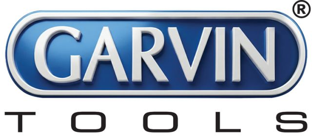

MITEX 2026 · Индия · Стенд 7B11A
Гарвин Тулз - Ravi International
Карточка проверена 10 ноября 2026, 09:28 · Источник ↗ · Снимок оригинальной карточки ↗
О компании
GARVIN Tools — индийский производитель и экспортёр профессионального инструмента, предлагающий международным рынкам широкий ассортимент промышленного, прецизионного, станочного, ручного и столярного инструмента. Обладая многолетним опытом производства, GARVIN Tools сочетает проверенные технологии производства, инженерную экспертизу и современные процессы контроля качества, обеспечивая надёжность и стабильные характеристики продукции. Наш ассортимент включает столярный инструмент, ручной инструмент, прецизионный измерительный инструмент, режущий инструмент, принадлежности для токарных и фрезерных станков, станочные тиски, расточные головки, оборудование для смазки, магнитный и правочный инструмент, инструменты для ювелирного и часового производства, а также специализированный инструмент для мастерских. Мы сотрудничаем с импортёрами, дистрибьюторами, оптовыми компаниями, розничными продавцами, промышленными предприятиями и OEM-партнёрами, предлагая конкурентоспособные цены, стабильное качество и гибкие решения для международных рынков. Наши производственные процессы предусматривают контроль размерной точности, качества материалов, термообработки, обработки поверхности, функциональных характеристик и финальную проверку продукции, что позволяет обеспечивать надёжность инструмента для профессионального применения. GARVIN Tools заинтересована в развитии долгосрочного сотрудничества с российскими импортёрами и дистрибьюторами, включая OEM-производство и изготовление продукции по техническим требованиям, чертежам, бренду и упаковке заказчика. На выставке мы будем рады встретиться с российскими дистрибьюторами, импортёрами, оптовыми компаниями, розничными продавцами и промышленными покупателями, заинтересованными в надёжном, конкурентоспособном и экспортном инструменте из Индии. GARVIN Tools — точность. Надёжность. Партнёрство.
Контакты
Все контактные сведения из карточки
Контакты M-278, Sec 1, Bawana Industrial Park E-mail: sales@garvintools.com Адрес: Индия, New Delhi, New Delhi Веб-сайт: https://www.garvintools.com E-mail: sales@garvintools.com
Все рубрики участника
Mitex - Рубрикатор
- 2. Садовая техника, инструмент, инвентарь, оборудование, расходные материалы и насосы
- 5. Слесарный, монтажный, столярный, ручной инструмент
- 8. Инструмент и оборудование для автосервиса
Зал
- Зал № 7
Участник выставки
- MITEX
Фотографии и изображения

Видео, каталоги и документы
В доступной карточке нет видео или документов. Смотрите сайт участника.